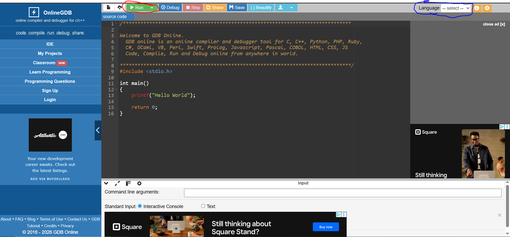

Onboarding Instructions
Complete these steps to participate in the pilot program.
Step 0: Use Google Chrome (Required)
All development and testing were done on Google Chrome.
- Other browsers may cause issues.
- Firefox has known compatibility problems with proctoring and recording.
- Download Chrome at: google.com/chrome if needed.
Step 1: Create Your Account
- Go to: [Platform Link]
- Click Create Account
- Register using your @vt.edu email
- When logged in, edit your profile to update your username. Use your First and Last Name in the username field.
(This is the name that will appear on your credential.)
⚠ Important: Updating your name in the profile settings is required. We use this name to identify you and assign your bonus points. If your name is not set correctly, we will not be able to credit you — please do not skip this step.
Step 2: Access the Practice Problem
- Log in to the platform.
- Click on the Problems tab.
- Open the problem titled "Hello World."
Step 3: Enable Proctoring Permissions
Before the editor opens, you will be prompted to allow:
- Webcam access
- Screen sharing
Click Allow for both. For screen sharing you must select entire screen and not window or tab options.
Recordings are reviewed only by course staff for academic integrity purposes.
Step 4: Write and Test Your Code
Write a program that prints:
Hello WorldHow to Use OnlineGDB for Testing:
- Open the onlineGDB link linked in the problem description on the platform (OnlineGDB editor has an example code provided when you open it).
- Paste your code into the editor.
- Select your programming language from the dropdown menu (circled in blue in the top right corner).
- Click the green "Run" button (circled in red above the code editor) to test your code.
- Check the output in the console below and make sure it matches the expected output exactly.
- Once you confirm your code works correctly, copy it and return to the platform to submit your solution.

- Ensure your code works before submitting.
- Important: The output must match the phrase provided exactly (case sensitive, no newline after).
Step 5: Submit
Important: You are allowed one submission only for this problem. Test carefully before submitting.
- Click on the submit button (top right corner).
- The system will automatically evaluate your code against test cases.
- Note: There will be no credentials issued for this problem.
Step 6: Report Issues (If Any)
If you encounter:
- Errors
- Pages that do not load
- Permission issues
- Unexpected behavior
Submit a ticket at: [Troubleshooting Ticket Form]
Do not ignore technical issues — reporting them helps us resolve problems before graded assessments.
Step 7: Complete Feedback Survey
After successful submission, complete the short feedback survey: